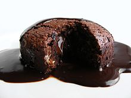

Molten chocolate cake is a popular dessert that combines the elements of a chocolate cake and a soufflé.
[citation needed] Its name derives from the dessert's liquid chocolate center,[1] and it is also known as
chocolate moelleux (from French for "soft"), chocolate lava cake, or simply lava cake.[2] It should not be
confused with chocolate fondant, a recipe that contains little flour, but much chocolate and butter, hence
melting on the palate (but not on the plate).
EggsMilk

A delicious lava cake